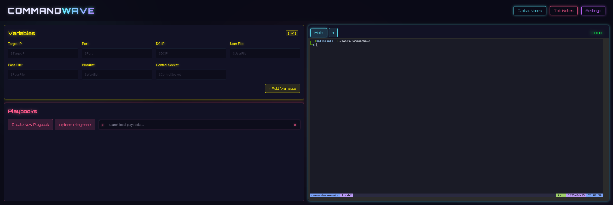

A cyberpunk-themed web interface for managing terminal sessions alongside executable Markdown playbooks.
CommandWave provides a streamlined, web-based environment for managing multiple terminal sessions powered by tmux and ttyd. It features a distinct cyberpunk/neon aesthetic and allows users to work with Markdown-based "playbooks" containing executable code blocks. Define variables, search through local playbooks, and execute commands directly into your active terminal session, enhancing command-line workflows.

Create, switch between, rename, and close multiple terminal sessions backed by tmux and ttyd.
Upload Markdown files as playbooks, which are parsed to separate text blocks from code blocks. Create cross-references between playbooks to build an interconnected knowledge base.
Create custom variables and reference them in code blocks. All variables are auto-substituted, synchronized, and updated in real time across sessions.
Execute commands directly from playbooks to the active terminal.
Global and per-tab notes for keeping track of your work.
Quickly search across all loaded and local playbooks for specific commands or text, with smart highlighting and filtering.
Beautiful neon-inspired interface with consistent theming.
Included configuration for matching terminal aesthetics.
Execute shell command blocks from playbooks directly into the active terminal session with a single click.
Switch between cyberpunk dark and neon light themes with persistent preferences and optimized terminal readability.
All application data synchronized across clients.
Getting started with CommandWave is quick and straightforward:
Ensure ttyd and tmux are installed and accessible in your system's PATH.
For ttyd, download binaries or build from source via the official ttyd GitHub repository.
For tmux, install using your system's package manager:
sudo apt install tmux # For Debian/Ubuntu
brew install tmux # For macOS
git clone https://github.com/Journey-West/CommandWave
cd CommandWave
pip install -r requirements.txt
python main.py --use-default-tmux-config
Open your web browser and navigate to http://localhost:5000
Additional command line options:
--hostname HOSTNAME # Specify hostname for terminal connections (default: localhost)
--remote # Enable remote access by binding to all interfaces
--port PORT # Specify web server port (default: 5000)